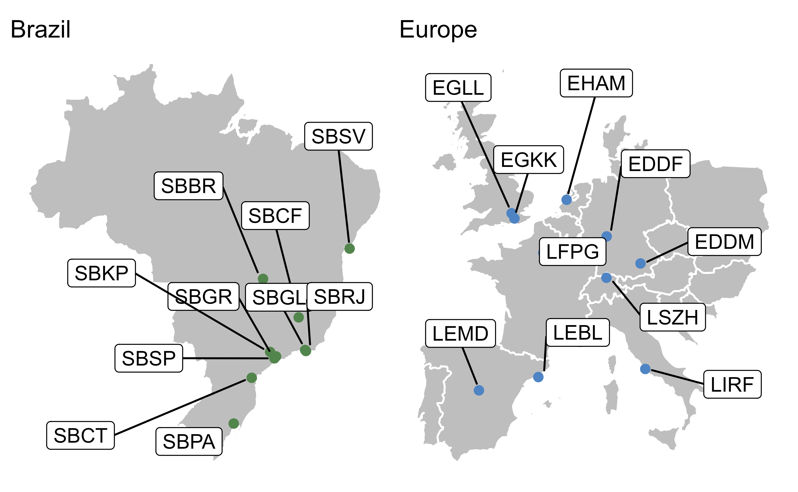

1 Introduction
1.1 Background
Since its first flights, the aviation world has learned that standardisation is the key to healthy and prosperous growth. Over the years, the good lessons experienced in sharing standards in operational activities have spread to all areas, including organisational management and strategic planning. In the early 2000s, ICAO proposed an approach inspired by the renowned PDCA cycle, adding performance-based management to it. Although ICAO emphasises the importance of a performance-based approach, the lack of a common understanding of establishing and calculating the indicators would make them internationally useless. Therefore, in 2016, interested stakeholders developed a set of key performance indicators used by a variety of organisations to establish a common set of indicators. This set of indicators is proposed as part of the ICAO Global Air Navigation Plan update cycle and the related Aviation System Block Upgrades. Stakeholders are encouraged to share their common understanding and lessons learnt from measuring air navigation system performance and providing input to the decision making process in terms of operational procedure changes and deployment of novel enabling technologies.
With this willingness to partner and share, Brazil and Europe, represented by DECEA and EUROCONTROL, signed a cooperation agreement in 2015. Amongst other activities, this agreement entails the collaboration and joint developments in the field of operational performance benchmarking of Air Navigation Services (ANS).
Based on this agreement, the Brazilian Department of Airspace Control (DECEA) started a Working Group, which has become the ATM Performance Indicators Management Committee, aiming at improving performance-based management. Through lessons learnt from the best practices observed at EUROCONTROL, and in particular its Performance Review Unit (PRU), DECEA established the Performance Section.
DECEA Performance Section and the PRU have established a joint project to foster the common understanding and harmonised interpretation of the proposed ICAO GANP indicators. The technical work has been conducted throughout the recent years comprising joint face-to-face workshops/meetings and a series of web-based discussions. An essential part of the work entailed the identification and validation of comparable data sources, the development of a joint data preparatory process, and supporting analyses to produce this report.
1.2 Scope
Comparisons and operational benchmarking activities require common definitions and joint understanding. Hence the work in this report draws from commonly accepted outputs of previous work from ICAO, other bi- or multi-regional operational benchmarking activities (e.g. PBWG 1), and regional or organisational practices. The key performance indicators (KPIs) used in this report are developed using procedures on best available data from both the DECEA Performance Section and PRU. The comparison described in this report does not address all eleven Key Performance Areas (KPA). From an indicator perspective, DECEA Performance Section and PRU agreed to focus on an operational benchmarking and to collaborate on the basis of the currently proposed performance indicators coordinated by ICAO in conjunction with the update of the Global Air Navigation Plan (GANP). This second edition builds on the initial report and focuses on system characteristics and the KPAs Capacity, Efficiency, Predictability and Environment. The report also presents an initial approach to quantifying potential inefficiencies in terms of fuel burn and CO2 emissions.
1.3 Geographical Scope
The geographical scope of this report relates to Brazil and Europe.
Brazil is defined as the sovereign airspace of the national territory of Brazil. In Brazil, airspace control is performed in an integrated civil-military manner. The same institution performs both the air defence and air traffic control functions: the Brazilian Air Force. The Department of Airspace Control (DECEA) is a governmental organization subordinated to the Brazilian Air Force Command. That Department coordinates and provides human resources and technical equipment for all air traffic units within Brazilian territory, ensuring the safety of air traffic and, at the same time, contributing to military defence.
DECEA is the main body of the Brazilian Airspace Control System (SISCEAB). The department is in charge of providing the Air Navigation Services for the 22 million km2 of airspace jurisdiction, including oceanic areas. The Brazilian airspace is composed of 5 Flight Information Regions (FIR). Air traffic within these FIRs is managed by 4 operational bases subordinated to DECEA. The areas of responsibility of these integrated Centres for Air Defence and Air Traffic Control (CINDACTA) are depicted in Figure 1.1).

The CINDACTAs combine civil air traffic control and air defence military operations. In addition to CINDACTAs, there is also the Regional Center of Southeast Airspace Control (CRCEA-SE), which is responsible for servicing air traffic for the high density air flow in the terminal areas of São Paulo and Rio de Janeiro.

In this report, Europe, i.e. the European airspace, is defined as the area where the 41 EUROCONTROL member states provide air navigation services, excluding the oceanic areas and the Canary islands (c.f. Figure 1.2). In 2016, EUROCONTROL signed a comprehensive agreement with Israel and Morocco. Both comprehensive agreement States will be successively fully integrated into the working structures including performance monitoring. Within this report, these states are included in the reported network traffic volume.
EUROCONTROL is an inter-governmental organisation working towards a highly harmonized European air traffic management system. Air traffic services are provided by air navigation service providers entrusted by the different EUROCONTROL member states. Dependent on the local and national regimes, there is a mix of civil and military service providers, and integrated service provision. The Maastricht Upper Area Control Center is operated by EUROCONTROL on behalf of 4 States (Netherlands, Belgium, Luxemburg, and Germany). It is the only multi-national cross-border air traffic unit in Europe at the time being. Given the European context and airspace structure, the European area comprises 37 ANSPs with 62 en-route centres and 16 stand-alone Approach Control Units (i.e. totalling 78 air traffic service units).
Europe employs a collaborative approach to manage and service airspace and air traffic. This includes the integration of military objectives and requirements which need to be fully coordinated within the ATM System. A variety of coordination cells/procedures exists between civil air traffic control centres and air defence units reflecting the local practices. Many EUROCONTROL member states are members of NATO and have their air defence centres / processes for civil-military coordination aligned under the integrated NATO air defence system.
Further details on the organisation of the regional air navigation systems in Brazil and Europe will be provided in Section 2.1.
1.3.1 Study Airports
As concerns airport-related air navigation performance, this edition of the comparison report addresses the performance at a set of selected airports. These airports represent the top-10 or most relevant airports in terms of IFR movements in both regions and allow to make meaningful comparisons. In Brazil, the selected airports play a significant role in terms of the national and regional connectivity, including the major hubs for international air traffic. These study airports have consolidated systems and structured processes for data collection in support of this comparison report. For the European context, the study airports comprise the busiest airports in several states exhibiting a mix of national, regional, and international air traffic. These airports are also characterised by varying operational constraints that make them excellent candidates for an international comparison. All of these airports are subject to the performance monitoring under the EUROCONTROL Performance Review System and provide movement related data on the basis of a harmonised data specification.
Figure Figure 1.3 provides an overview of the location of the chosen study airports within the regions. The airports are also listed in Table 1.1.
(ref:scopetable-caption) List of study airports for the Brazil / Europe operational ANS performance comparison
Brazil | Europe |
|---|---|
* Brasília (SBBR) | * Amsterdam Schiphol (EHAM) |

1.3.2 Temporal Scope
This report focuses mainly on the period from January 2019 through to June 2021. Based on the initial report and data availability, a longer time series (up to June 2022) will be presented, as far as practicable. With this report the focus is on building a timeline with comparable data to be augmented in future editions.
Throughout the report, summary statistics will be given with reference to calendar years of this comparison study. It must be noted that the data for 2022 covers the first six months, January through June.
1.4 Data Sources
The nature of the performance indicator requires the collection of data from different sources. DECEA Performance Section and PRU investigated the comparability of the data available in both regions, including the data pre-processes, data cleaning and aggregation, to ensure a harmonised set of data for performance comparison purposes.
DECEA mainly uses tower data from the main airports as a data source for performance studies. This was combined with ANAC official and public data for specific indicators. Each landing and take-off operation is collected and provided automatically by the control tower system. The provided data includes such items as the times of operations, gate entry and exit, and flight origin and destination
Within the European context, PRU has established a variety of performance-related data collection processes. For this report the main sources are the European Air Traffic Flow Management System complemented with airport operator data. The sources are combined to establish a flight-by-flight record. This ensures consistent data for arrivals and departures at the chosen study airports. The data is collected on a monthly basis and typically processed for the regular performance reporting under the EUROCONTROL Performance Review System and the Single European Sky Performance and Charging Scheme (EUROCONTROL 2019).
1.5 Structure of the Report
This edition of the Brazil-Europe comparison report is organised as follows:
- Introduction overview, purpose and scope of the comparison report; short description of data sources used Air Navigation System Characteristics high-level description of the two regional systems, i.e. areas of responsibility, organisation of ANS, and high-level air navigation system characteristics
- Traffic Characterisation air traffic movements, peak day demand, and fleet composition observed at the study airports
- Predictability observed arrival and departure punctuality
- Capacity and Throughput assessment of the declared capacity at the study airports and the observed throughput, including runway system utilisation comparing achieved peak throughput to the declared capacity.
- Efficiency analysis of taxi-in, taxi-out, and terminal airspace operations.
- Environment initial analysis of the additional fuel burn and associated CO2 emissions based on the observed operational inefficiencies.
- Conclusions summary of this report and associated conclusions; and next steps.
The Performance Benchmarking Working Group (PBWG) is a multi-regional group with participation from Singapore, Thailand, Japan, Brazil, China, United States, and Europe.↩︎